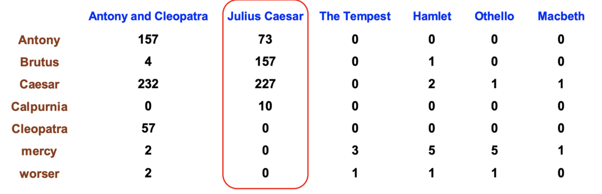
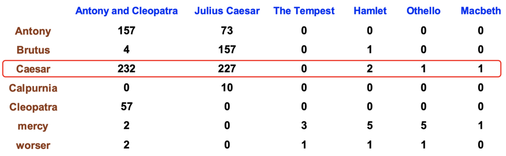
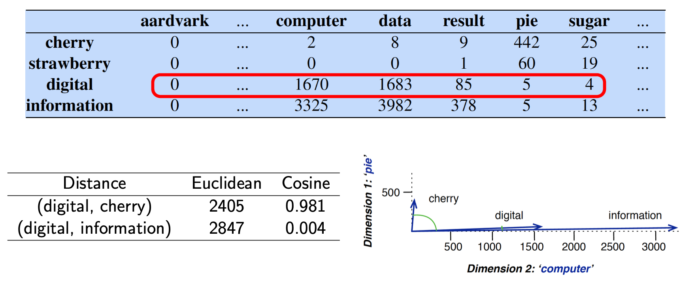
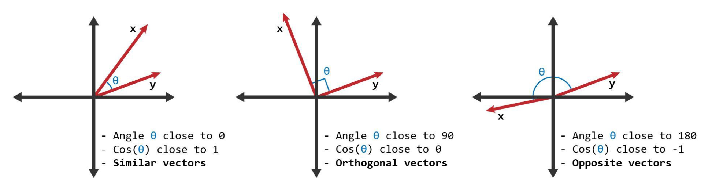
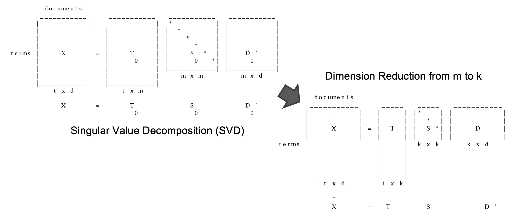
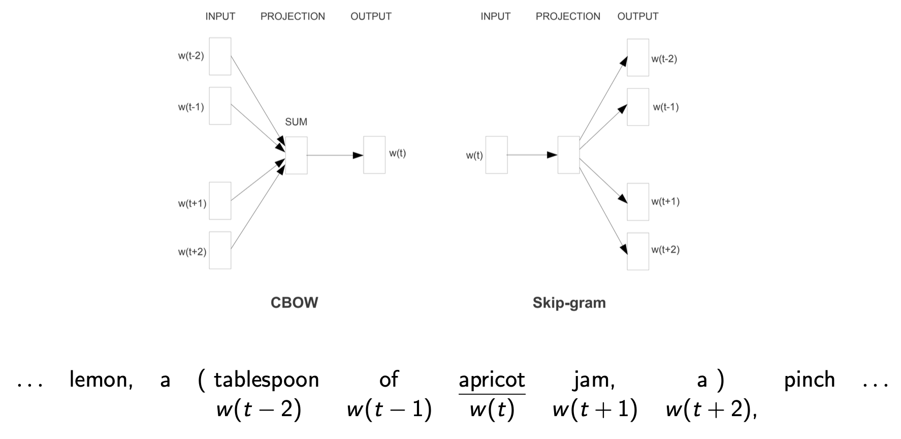
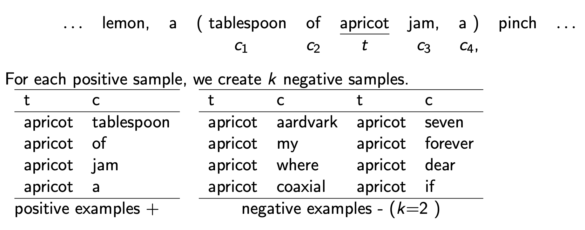
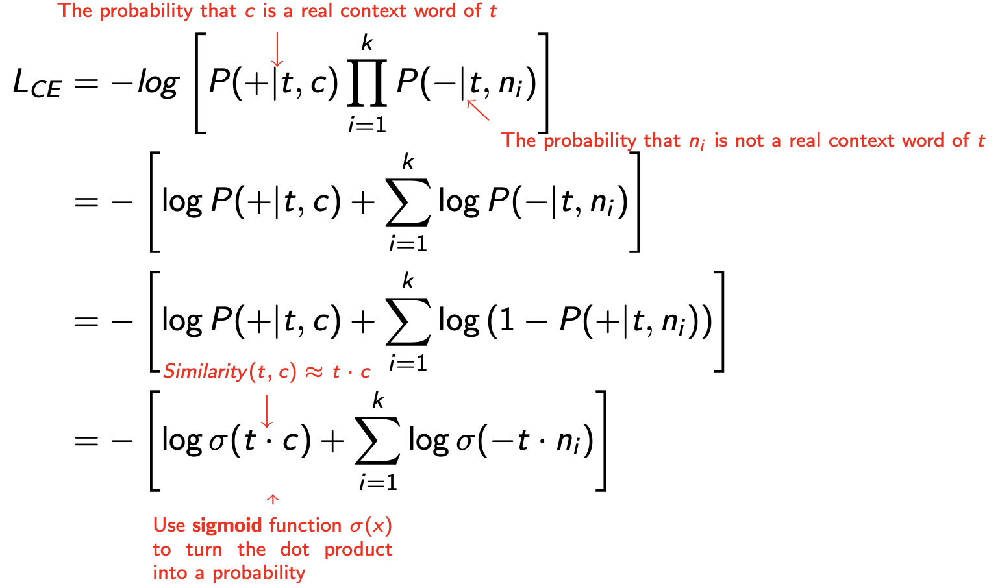
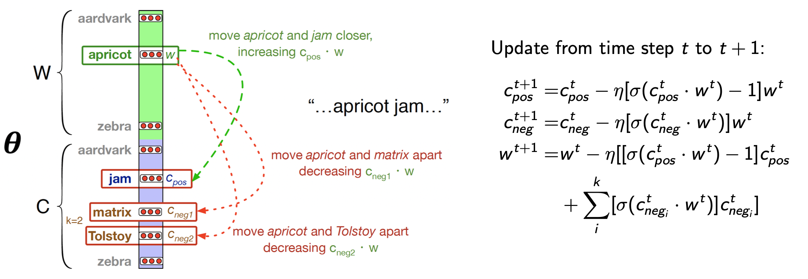
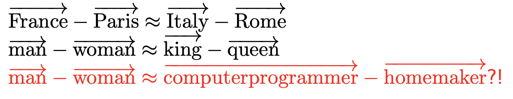

This is Lecture 5 from my Natural Language Processing course.
Transitioning to Word Meaning
So far:
- n-grams predict next word from sequence of tokens
- Naive Bayes classify using word counts/probabilities
- POS/NER assign symbolic categories to words
Limitations:
- Model knows dog cat, but not that they’re similar
- No notion of synonymy, antonymy, or relatedness
We want our models to understand that:
- buy, sell, pay are related through events (similarity)
- happy and sad are opposites (relatedness)
- coffee and cup co-occur in real life (connotation)
Vector Semantics
It’s used to define meaning by linguistic distribution: look at its neighbouring words or grammatical environments
Foundations
- Words are represented as points (vectors) in some multi-dimensional space
- Word vectors are generally called embeddings
- Semantically similar words are mapped to nearby points, that is “are embedded nearby each other”
- A desirable property: proximity in the vector space semantic similarity/relatedness
Words as Vectors
Term-document matrix
Each document is represented as a count vector (a column) and each word is also a vector (a row)! The dimensionality depends on context


Term-term matrix
In this case words are both rows and columns. Each cell records the number of times the row (target) word and the column (context) word co-occur in some context in some training corpus. The dimensionality is .
Cosine for measuring similarity
How do we calculate the similarity (or distance) between word vectors?
Cosine similarity measures the similarity in the direction or orientation of the vectors, ignoring differences in their magnitude or scale.


TF-IDF: Weighing terms in the vector
Raw frequency alone is not a reliable measure of association between words, as it can be skewed and lacks discrimination power.
We need to balance two important constraints:
- Words that frequently co-occur within a given context are more significant than those that only appear a few times.
- Co-occurrences with highly frequent words are less informative and should be down-weighted accordingly.
TF-IDF weighting
- Term frequency or
- Inverse document frequency , where is the total number of documents, and is the number of documents the term occurs in.
- TF-IDF weight
Long and sparse vectors do not model synonyms. Sparse vectors may not capture the similarity between words that have either as neighbours (e.g. car and automobile).
Because of this reason, we define short and dense vectors.
Short and Dense Vectors
Latent Semantic Analysis (LSA)
Global co-occurrence count-based method
- Based on statistics of how often some word co-occurs with its neighbour words in a large text corpus
- Dimensionality reduction methods (SVD or Random Projection)

We keep the truncated matrix T as the word embeddings
Using the dense vectors for similarity computations:
- Typically gives better results (filter out noise)
- Faster
Word2Vec
Local context predictive method
- Instead of counting, train a classifier on a binary prediction task: is word likely to show up near ?
- a simple task: binary classification instead of word prediction
- a simple architecture: logistic regression instead of multilayer neural network
- no need for human labels

Word2Vec: Skip-gram(context representation: better coverage of rare words) + Negative sampling(training method: more intuitive)
The Skip-Gram classifier
- Train a probabilistic classifier that, given
- a test target word t,
- its context window of L words ,
assigns a probability based on how similar this context window is to the target word
- This classifier gives a reasonably high probability estimate to all words that occur in the context
- Lower probabilities to noise words (negative examples)
Intuition
- Treat the target word and a neighbouring context word as positive examples.
- Randomly sample other words in the lexicon to get negative samples.
- Use logistic regression to train a classifier to distinguish those two cases.
- Use the regression weights as the embeddings.

The goal is to train a classifier, such that, given a pair, assigns the probability:
- : the probability that c is a real context word of t
- : the probability that c is not a real context word of t
The probability for one context word
Assuming all L context words are independent
The sigmoid function turns the dot products into probabilities.
Skip-gram Loss function
Consider one positive example with its noise words, , the learning objective is to minimise this loss function :

One step of gradient descent:
- Shift the embedding of the target word apricot towards that of the real context word jam
- Shift the embedding of the target word apricot away from that of the noise word Tolstoy

As a result:
- Words that share many contexts get close to each other
- Contexts that share many words get close to each other
- Represent each target word as a d dimensional vector
- Represent each context word as a d dimensional vector
Bias in word embeddings
Word embeddings can reflect gender, ethnicity, age, sexual orientation and other biases of the text used to train the model.

Here comes the riddle
A man and his son get into a terrible car crash. The father dies, and the boy is badly injured. In the hospital, the surgeon looks at the patient and exclaims, “I cannot operate on this boy, he is my son!”
The idea from the riddle above is that our brains would usually associate surgeon with a men profession. The surgeon in this case is the mother.